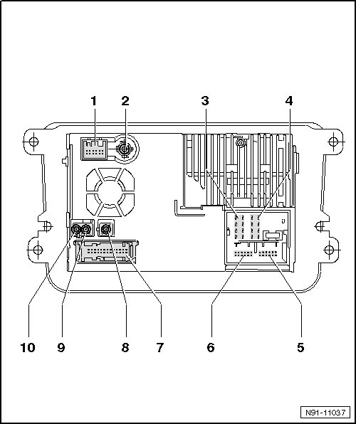
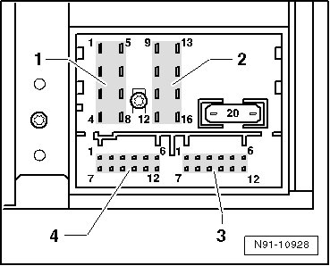
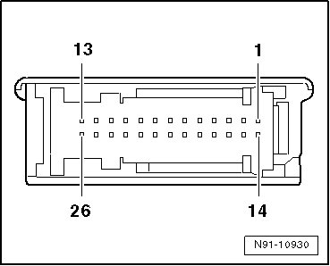
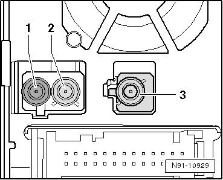

RNS 510 Connectors Overview
RNS 510 Connectors Overview

1 Navigation connection
• for Japan vehicles only
2 Antenna connection
• Input connector for the DAB antenna, optional
or
• Input connector for an SDARS antenna, North America and Canada
3 Multi-pin connector 1, 8-pin
• Terminal assignment, refer to --> [ 8-Pin Connector 1, Speaker Outputs ]
4 Multi-pin connector 2, 8-pin
• Terminal assignment, refer to --> [ 8-Pin Connector 2, Voltage Supply Wires and CAN Bus ]
5 Multi-pin connector 3, 12-pin
• Terminal assignment, refer to --> [ 12-Pin Connector 3, Telephone and Microphone Signals ]
6 Multi-pin connector 4, 12-pin
• Terminal assignment, refer to --> [ 12-Pin Connector 4, CD Changer Control and Audio Input Signals ]
7 26-pin connector
• Terminal assignment, refer to --> [ 26-Pin Connector 5, Audio and Video ]
8 Antenna connection
• for navigation
• for additional information, refer to --> [ Antenna Connections 8 through 10 ]
9 Antenna connection
• FM 2 antenna
• for additional information, refer to --> [ Antenna Connections 8 through 10 ]
10 Antenna connection
• FM/AM antenna
• for additional information, refer to --> [ Antenna Connections 8 through 10 ]
8-Pin Connector 1, Speaker Outputs

1 Right rear speaker, positive
2 Right front speaker, positive
3 Left front speaker, positive
4 Left rear speaker, positive
5 Right rear speaker, negative
6 Right front speaker, negative
7 Left front speaker, negative
8 Left rear speaker, negative
• When using an amplifier, the same terminal assignment for Line-In are used for the amplifier. The radio unit is factory programmed from " Output Stage Power 26dB" to "Output Stage Line Out 12dB".
8-Pin Connector 2, Voltage Supply Wires and CAN Bus
9 CAN bus High
10 CAN bus Low
11 BOSE pin
12 Voltage supply, negative, terminal 31
13 not used
14 not used
15 Voltage supply, positive, terminal 30
16 Control signal, anti-theft protection, SAFE, positive
12-Pin Connector 3, Telephone and Microphone Signals
1 Microphone input, minus
2 not used
3 not used
4 Microphone output, minus
5 Left telephone audio input signal, negative
6 Right telephone audio input signal, negative
7 Microphone input, positive
8 not used
9 Microphone output, positive
10 Telephone mute (radio mute)
11 Left telephone audio input signal, positive
12 Right telephone audio input signal, positive
12-Pin Connector 4, CD Changer Control and Audio Input Signals
1 Left input AUX signals
2 AUX signal ground
3 CD changer, audio signal ground
4 CD changer, voltage supply, positive, terminal 30, contact continuous power handling greater than 1A, short-term peak power handling 5A
5 not used
6 CD changer, DATA OUT (data exchange for CD changer control from the radio navigation system to the CD changer)
7 Right input AUX signals
8 CD changer, left port audio, CD/L
9 CD changer, right port audio, CD/R
10 CD changer, control wire, switched positive
11 CD changer, DATA IN (data exchange for the CD changer control from the CD changer to the radio navigation system)
12 CD changer, CLOCK (internal test protocol for monitoring data flow)
26-Pin Connector 5, Audio and Video

1 reserved for protocol debug RX
2 reserved for protocol debug TX
3 not used
4 not used
5 Video output LF, right
6 Video signal output, shielding mass
7 Video signal output, synchronization vertical and horizontal
8 Video signal output, green
9 not used
10 Right video signal input NF
11 Video signal input, shielding mass
12 Video signal input, synchronization vertical and horizontal
13 Video signal input, green
14 not used
15 not used
16 not used
17 Video signal input LF, negative
18 Video signal output, LF, left
19 Video signal output, RGBS, negative
20 Video signal output, blue
21 Video signal output, red
22 Video signal input NF, negative
23 Left video signal input NF
24 Video signals input, RGBS, negative
25 Video signal input, blue
26 Video signal input, red
Antenna Connections 8 through 10

1 Terminal connector antenna radio reception AM and FM, Double Fakra, no coding, impedance 50 Ohm, color cream white
2 Terminal connector antenna radio reception FM2, Double Fakra, coding B, impedance 50 Ohm, color cream white
3 Terminal connector antenna navigation, Fakra, coding C, impedance 50 Ohm, color signal blue